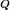

Least squares problems numerical methods¶
This section presents numerical methods that can be used in order to
solve least squares problems, which can be encountered when the
construction of a response surface (i.e. of a meta-model) is of
interest, or when one wishes to perform a statistical regression.
Given a matrix , ,
and a vector , we want to find a
vector such that
is the best approximation to
in the least squares sense. Mathematically
speaking, we want to solve the following minimization problem:
In the following, it is assumed that the rank of matrix is equal to
.

Several algorithms can be applied to compute the least squares
solution, as shown in the sequel.
Method of normal equations
It is shown that the solution of the least squares problem satisfies
the so-called normal equations, which read using a matrix notation:
The matrix
is symmetric and positive definite. The system can be solved using the
following Cholesky factorization:
where  is an upper triangular matrix with positive
diagonal entries. Solving the normal equations is equivalent to
solving the two following triangular systems, which can be easily
solved by backwards substitution:
is an upper triangular matrix with positive
diagonal entries. Solving the normal equations is equivalent to
solving the two following triangular systems, which can be easily
solved by backwards substitution:
is an upper triangular matrix with positive
diagonal entries. Solving the normal equations is equivalent to
solving the two following triangular systems, which can be easily
solved by backwards substitution:It has to be noted that this theoretical approach is seldom used in
practice though. Indeed the resulting least squares solution is quite
sensitive to a small change in the data (i.e. in
and ). More precisely, the normal equations are
always more badly conditioned than the original overdetermined system,
as their condition number is squared compared to the original problem:
As a consequence more robust numerical methods should be adopted.
Method based on QR factorization
It is shown that the matrix can be factorized as
follows:
where  is a  -by--matrix with
orthonormal columns and is a
-by--upper triangular matrix. Such a QR
decomposition may be constructed using several schemes, such as
Gram-Schmidt orthogonalization, Householder reflections or Givens
rotations.
-by--matrix with
orthonormal columns and is a
-by--upper triangular matrix. Such a QR
decomposition may be constructed using several schemes, such as
Gram-Schmidt orthogonalization, Householder reflections or Givens
rotations.
-by--matrix with
orthonormal columns and is a
-by--upper triangular matrix. Such a QR
decomposition may be constructed using several schemes, such as
Gram-Schmidt orthogonalization, Householder reflections or Givens
rotations.In this setup the least squares problem is equivalent to solving:
This upper triangular system can be solved using backwards
substitution.
The solving scheme based on Householder QR factorization leads to a
relative error that is proportional to:
where
 .
Thus this error is expected to be much smaller than the one associated
with the normal equations provided that the residual
is “small”.
.
Thus this error is expected to be much smaller than the one associated
with the normal equations provided that the residual
is “small”.
.
Thus this error is expected to be much smaller than the one associated
with the normal equations provided that the residual
is “small”.Method based on singular value decomposition
The so-called singular value decomposition (SVD) of matrix
reads:
where and
are orthogonal matrices, and
can be cast as:

In the previous equation,
is a diagonal matrix containing the singular values
of
.
It can be shown that the least squares solution is equal to:
In practice it is not common to compute a “full” SVD as shown above.
Instead, it is often sufficient and more economical in terms of time
and memory to compute a reduced version of SVD. The latter reads:
where  is obtained by extracting the
first columns of
is obtained by extracting the
first columns of  .
.
is obtained by extracting the
first columns of .Note that it is also possible to perform SVD in case of a
rank-deficient matrix . In this case the resulting
vector corresponds to the minimum
norm least squares solution.
The computational cost of the method is proportional to
with a factor ranging from 4 to 10, depending on
the numerical scheme used to compute the SVD decomposition. This cost
is higher than those associated with the normal equations and with QR
factorization. However SVD is relevant insofar as it provides a very
valuable information, that is the singular values of matrix
.
Comparison of the methods
Several conclusions may be drawn concerning the various methods considered so far:
- If , normal equations and Householder QR factorization require about the same computational work. If , then the QR approach requires about twice as much work as normal equations.
- However QR appears to be more accurate than normal equations, so it should be almost always preferred in practice.
- SVD is also robust but it reveals the most computationally expensive scheme. Nonetheless the singular values are obtained as a by-product, which may be particularly useful for analytical and computational purposes.
API:
- See the available least squares methods.
- See
PenalizedLeastSquaresAlgorithm
References:
- Bjorck, 1996, “Numerical methods for least squares problems”, SIAM Press, Philadelphia, PA.